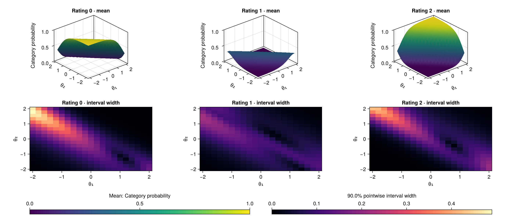
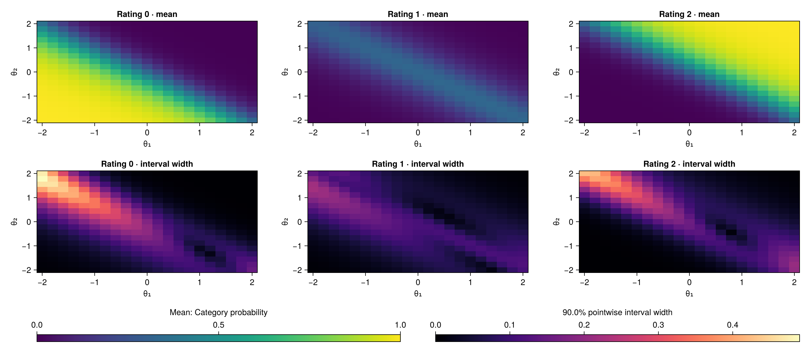

Visualization Gallery
This manual includes unreleased interfaces and examples. It is not the documentation of an installed release. Model support and scientific acceptance remain as stated on each page.
A useful plot answers a question. Start with location, then examine response patterns, and finally ask how a multidimensional model translates abilities into rating probabilities.
Unified plotting overview (BayesianMGMFRM.plot)
After loading CairoMakie (using BayesianMGMFRM, CairoMakie), you can call either the unified BayesianMGMFRM.plot(x; kind = ...) dispatcher or the dedicated plot_* helpers:
| Question | Unified call (BayesianMGMFRM.plot) | Dedicated helper | What the display shows |
|---|---|---|---|
| Where are people, items, raters, and steps on the shared measurement scale? | BayesianMGMFRM.plot(fit; kind = :wright) | plot_wright(fit) (person_display = :histogram or kind = :ridge) | Separate facets share a vertical (or horizontal ridge) logit scale with medians, intervals, and fixed-reference diamonds. |
| Which response patterns deserve a closer look at a given location? | BayesianMGMFRM.plot(fit; kind = :pathway) | plot_pathway(fit) | Posterior infit/outfit mean-square on the horizontal axis; facet logit location on the vertical axis. |
| How do two abilities change the probability of a rating? | BayesianMGMFRM.plot(fit; kind = :response_surface, ...) | plot_response_surface(fit; layout = :overlay | :panels | :heatmaps, ...) | Two ability axes, a 0–1 probability axis/color scale, and pointwise credible-interval width heatmaps. |
| What are the parameter estimates, chain traces, or posterior predictive checks? | BayesianMGMFRM.plot(fit; kind = :posterior | :diagnostics | :predictive) | plot_posterior(fit), plot_diagnostics(fit), plot_predictive(fit) | Credible intervals, chain trace/rank histograms, or observed vs. replicated category proportions. |
| How sensitive are conclusions to the prior, or how precise is a planned design? | BayesianMGMFRM.plot(rep; kind = :prior_sensitivity | :prior_predictive_sensitivity | :design_precision) | plot_prior_sensitivity, plot_prior_predictive_sensitivity, plot_design_precision | Prior-variant interval/ridge shifts (guide) or planned-cohort target interval-width frequencies (guide). |
| How does rater severity drift over time, or which raters collapse criteria? | BayesianMGMFRM.plot(rep; kind = :rater_drift | :criterion_collapse_classes | :criterion_collapse_categories) | Experimental.RaterDrift.plot_trajectory, Experimental.CriterionCollapse.plot_classes / plot_categories | Temporal severity trajectories (guide) or latent-class probabilities and category curves (guide). |
The Wright and Pathway illustrations below use deterministic artificial draws, not fitted posteriors. They demonstrate the output and its reading conventions, not uncertainty calibrated by a study. The original MGMFRM figures reuse a saved experimental fit to simulated ratings; the new category-panel illustrations explicitly use artificial display fixtures. None of these pictures establishes a recommended model. Select a figure to inspect it at full resolution. Titles and notes now appear outside the images, matching the default plotting behavior. Each figure has a separate downloadable text note; keep it with the image when sharing results.
To change an interval from 90% or 95% to 99%, follow the interval-level examples. They also explain ETIs, HDIs and the precision of interval endpoints.
Wright Map: locate the facets
Figure 1
Facet Locations in an Artificial MFRM Illustration

Note. This illustration uses 80 deterministic artificial draws, not a fitted posterior. Circles and bars summarize medians and central 95% intervals of those inputs; diamonds denote fixed references or anchors. External anchor uncertainty is excluded. All panels retain their original logit coordinates. The boundary panel uses zero rater severity and adjacent-category equality. The artificial draws trigger numerical MCMC warnings; they do not represent an estimation run.
PDF · SVG · Full text note
Read this map from left to right:
- Person ability: higher locations increase the odds of a higher rating.
- Rater severity and item difficulty: higher locations decrease those odds. The minus signs in the headings describe these effects; the plotted estimates have not been sign-reversed.
- Item plus category step: at zero rater severity, a person at a boundary has equal probabilities for the two adjacent categories. With three or more categories, those two probabilities need not each be 50%.
With an actual fit, circles mark posterior medians and bars mark central 95% credible intervals. Diamonds mark fixed references or anchors, whose external uncertainty is excluded. The illustration uses the same summary machinery on artificial inputs. Horizontal spacing simply separates labels. For boundaries, item difficulty and the step are added within each draw before summarization.
The shared scale can reveal how item locations relate to person locations and how raters differ in severity. It cannot show that an item measures the intended construct, that an anchor is correct, or that the chains converged. The current renderer supports stable unidimensional MFRM, including RSM and PCM. A single Wright axis does not summarize all abilities of MGMFRM.
using BayesianMGMFRM, CairoMakie
fit_result = load_fit_cache("analysis-fit.jls")
figure = BayesianMGMFRM.plot_wright(fit_result; interval = 0.95)
save("wright-map.svg", figure)
# The title and note appear in Julia output by default.See the Wright Map reference for selection and anchor details. The Facets manual describes the traditional shared-scale display; its expected-score columns are different from the adjacent-category boundaries used here.
Figure 2
Person Distribution Beside Item and Rater Locations

Note. A separate artificial example uses 80 people, four items and three raters, with 40 deterministic draws per parameter. Each person contributes one median to the histogram; the bars count 80 people, not 3,200 person-by-draw values. Bins are 0.5 logits wide from −3 to 3, left closed/right open with the final upper edge included. Points and intervals in the other panels summarize the artificial inputs; diamonds identify fixed references. The figure does not show individual person uncertainty or uncertainty in the bin counts. These inputs are not estimated posterior evidence; their numerical diagnostic warnings are retained in the full note.
PDF · SVG · Full text note · Numerical inputs
The histogram makes a larger cohort readable without crowding the figure with person labels. Compare its vertical extent with the item and rater positions. The horizontal scale is now a person count, while horizontal spacing in the item and rater panels still just separates labels. With an actual fit this would be a distribution of posterior medians affected by prior shrinkage, not an estimated population density or a distribution of all MCMC draws. Use the individual-interval view in Figure 1 when uncertainty about a person matters; changing bin widths can also change the apparent shape.
figure = BayesianMGMFRM.plot_wright(fit_result;
person_display = :histogram, bins = 12, include_thresholds = false)
save("wright-histogram.svg", figure)The FACETS frequency-column example motivates the layout. This option preserves the package's Bayesian quantities and its existing individual-interval default. All persons are counted even when their number exceeds the default limit of 60 individual positions; that limit still applies to item, rater and boundary marks. See Person histogram overview for explicit edges, full-roster report output and saved-fit reproduction.
Pathway Map: connect location with response patterns
Figure 3
Location and Infit in an Artificial MFRM Illustration

Note. This illustration uses the same 80 artificial draws as Figure 1. Points are marginal medians; horizontal and vertical bars show separate central 95% intervals, not a joint 95% region. Infit = 1 is a reference, not an automatic acceptance threshold. The artificial inputs are not posterior evidence. With a fitted model, review sampler diagnostics and predictive checks before interpretation.
PDF · SVG · Full text note
This is a Pathway-style display using posterior infit mean squares. The traditional Bond-and-Fox teaching approach combines location, fit and precision; implementations also use standardized infit t-statistics. The axes and intervals here have different definitions, so t-statistic cutoffs such as −2 and +2 do not apply.
The vertical position retains the meaning of the corresponding Wright panel. The horizontal position adds infit mean square, an information-weighted summary of squared standardized residuals. Values above the reference of 1 indicate more residual variation than the model reference; values below 1 indicate less. Infit emphasizes ratings with more model information. Outfit, available from the same data function, is more sensitive to unexpected ratings with small predicted variance.
For example, a high rater location with infit near 1 would suggest severity without the same signal of excess residual variation. A similar location farther to the right would prompt inspection of that rater's response patterns. These are reading examples, not findings from the artificial figure.
Here points are marginal medians. Horizontal and vertical bars summarize separate 95% marginal intervals; their cross is not a joint 95% region. The dashed line is a reference, not an automatic pass/fail cutoff. Posterior residual summaries reuse observed data, and their finite-sample behavior depends on the design. Interpret them alongside counts, predictive checks and the substantive rating context. A flagged point does not by itself establish bias, justify removing a rater, or choose MFRM over GMFRM.
The package supplies diagnostic_map_data; the figure is an example using CairoMakie, rather than a new package plotting API. Download the Pathway Map example, save it beside your analysis, and use a stable MFRM cache:
using BayesianMGMFRM, CairoMakie
include("pathway_map.jl")
fit_result = load_fit_cache("analysis-fit.jls")
save("pathway-map.svg", pathway_map(fit_result))
# Inspect the exact numerical rows and their flags before interpreting them.
rows = diagnostic_map_data(fit_result; metrics = :infit,
include_thresholds = false, interval = 0.95)The example uses every retained draw and does not fit a model. Review sampler diagnostics separately; missing summaries produce an error rather than omitted points. See Reading Results for the surrounding workflow.
MGMFRM in 3D: abilities become probabilities
The callable surface method currently accepts independent MGMFRMFit results with GeneralizedPrior and at least two ability dimensions. It does not accept normalized or correlated fit types. See the fitting guide for the exact method and conditioning choices.
Figure 4
Rating Probabilities Across Two MGMFRM Abilities

Note. Item I1 and rater R1, using all 16,000 saved joint draws from one experimental fit to simulated ratings. Height shows posterior mean category probability; the companion heatmaps show 90% pointwise interval widths. Q excludes the second ability for this item, so the surfaces are flat in that direction. There are no additional fixed ability dimensions. The saved fit had no warnings under its recorded MCMC thresholds. These intervals concern conditional probabilities, not future individual ratings; display ranges do not establish data support.
PDF · SVG · Full text note
This figure reuses 16,000 retained joint draws from one saved experimental MGMFRM fit to simulated ratings. Its four colors identify ratings 1–4. Moving along the first ability changes those probabilities: the lowest category loses probability, the highest gains probability, and intermediate categories can rise and fall. At each ability pair, all category probabilities sum to 1.
The surface is flat along the second ability because this item's Q row excludes that dimension. This is a model restriction, not evidence that the second ability is unimportant for every item. The heatmaps show widths of 90% pointwise credible intervals for the probabilities, on a shared color scale. They do not show probability height, future-rating intervals, simultaneous bands or MCSE.
Each grid point averages probabilities evaluated at the joint draws. In general, that differs from evaluating the model once at posterior-mean parameters. The selected rater's severity and consistency remain in the calculation. No new sampling was performed to produce this gallery.
using BayesianMGMFRM, CairoMakie
restored = load_fit_cache("mgmfrm-fit.jls")
figure = BayesianMGMFRM.plot_response_surface(restored;
item = "I1", rater = "R1", dimensions = (1, 2),
x = range(-2, 2; length = 21), y = range(-2, 2; length = 21),
category = :all, interval = 0.90)
save("mgmfrm-response-surface.svg", figure)Three display axes are not three latent dimensions. The height here is a probability. For an independent model with more than two abilities, the existing surface function requires values for every undisplayed ability and shows a conditional slice. A three-ability person scatterplot would instead require three latent axes, uncertainty displays and identifiable dimension meanings. It would not establish support for estimating a free correlation matrix with three or more dimensions; that fitting extension remains unavailable.
This is a static figure. The current CairoMakie interface can change the viewing angle or select one category; it does not provide browser rotation. See 3D item response surfaces for those controls. The saved fit had no warnings under its recorded MCMC thresholds, but one figure and one fit do not establish recovery, calibration, mixed-Q performance or model-selection validity.
See Titles and notes outside the image for saving the note to a file or selecting the previous embedded layout.
Compare items and raters
Figure 4 shows how to read all categories for one item–rater pair. To see how that response changes across the instrument, compare all five items at one fixed rater, then all five raters at one fixed item. These two comparisons reuse the same saved fit. They are not separate fits or new simulations.
The following panels select the highest rating, category 4, so that each panel contains one surface. Both figures use the same ability range (−2 to 2), 21 × 21 grid, viewing angle and 0–1 probability scale. Height and color encode the same posterior mean probability. The I1–R1 reference appears in both figures. Category 4 is one part of the response distribution; return to Figure 4 or select another category to inspect the others.
Figure 5
Item Comparison at Rater R1

Note. All five items from the same experimental fit to simulated ratings; rater R1 is fixed. Each surface averages category-4 probabilities across all 16,000 retained joint draws. Height and color share the 0–1 probability scale. Active dimensions are prescribed by Q: I1–I2 use θ₁, and I3–I5 use θ₂. The other axis is flat by construction. These images show posterior means only; the downloadable data retain 90% pointwise credible intervals. No additional ability dimensions are fixed. Display ranges do not establish data support.
PDF · SVG · Full text note · Numerical data
Start with the panel's Active label. I1 and I2 respond along θ₁, whereas I3, I4 and I5 respond along θ₂. Within an active direction, compare where the surface rises and how steeply. Item differences can reflect difficulty, category steps and loadings, as well as Q. This is not a ranking of difficulty on a single ability axis: the items do not all measure the same ability. I2's category-4 mean probability stays above 0.947 throughout this displayed grid. Its shallow-looking surface reflects probabilities already close to 1 in this range; that is different from excluding an ability through Q.
Figure 6
Rater Comparison at Item I1

Note. All five raters from the same experimental fit to simulated ratings; item I1 is fixed. Each surface averages category-4 probabilities across all 16,000 retained joint draws. The ability grid, viewing angle and 0–1 probability scale match Figure 5. Item I1 excludes θ₂, so every panel is flat along that axis. These images show posterior means only; the downloadable data retain 90% pointwise credible intervals. Rater differences include severity and consistency. They do not establish bias or rater quality.
PDF · SVG · Full text note · Numerical data
Here the item is held constant, so every panel has the same active dimension. Differences show how the fitted rater changes the probability of assigning the highest category at a given ability. Both severity and consistency enter the calculation. Do not infer a reliable between-rater difference from the distance between mean surfaces, or from overlap of separate marginal intervals. A probability contrast requires evaluating the difference at matched ability points within each joint draw and summarizing those differences. For example, at θ₁ = θ₂ = 0, the mean category-4 probability is approximately 0.93 for R1 and 0.34 for R4. These are conditional example probabilities from one simulated dataset, not a rater-quality ranking.
The saved fit had no warnings under its recorded MCMC thresholds. That does not establish calibration or adequate precision for every contrast. For a particular pair, plot_response_surface displays the pointwise interval-width heatmaps shown in Figure 4. The numerical downloads use rows for x and columns for y, and include each panel's mean, lower/upper endpoints and interval width. Their intervals describe conditional probabilities, not future individual ratings, simultaneous bands or intervals for differences.
Download the comparison example to create these editable figures from a two-ability MGMFRM cache. This example calls the existing numerical function; it adds no new fitting or plotting API. The first supplied item and rater are the references, and the supplied order sets the panel order. Titles and notes remain outside the images by default.
using BayesianMGMFRM, CairoMakie
include("response_surface_variants.jl")
restored = load_fit_cache("mgmfrm-fit.jls")
comparison = response_surface_variants(restored;
items = ["I1", "I2", "I3", "I4", "I5"],
raters = ["R1", "R2", "R3", "R4", "R5"], category = 4)
save("item-comparison.svg", comparison.items)
save("rater-comparison.svg", comparison.raters)
# Pointwise intervals are also available in comparison.item_data/rater_data.Choose the plot after the question
Use the Wright Map for locations, the Pathway Map for diagnostic follow-up, and the response surface for model-implied probabilities. Read each together with its uncertainty and source. Then return to model comparison and simulation: attractive or smooth figures cannot replace predictive evaluation, recovery or SBC.
Prior predictive sensitivity
The prior sensitivity guide compares category use, every item mean and every rater mean across explicit loading priors. Its worked example shows why matching the overall average can still conceal a category-use mismatch. Predictive intervals describe replicated score statistics; the adjacent posterior ridge views describe parameter draws.
Marginal uncertainty across facets
The ridge Wright map places one density per person, rater, item or item-step boundary on the same horizontal logit scale. Facet panels retain their stored level order. This is useful for seeing skewness and different uncertainty widths that an interval alone conceals. A single ridge pooling all people would mix between-person variation with uncertainty about each person; that is not what this view displays.

Artificial display fixture, not an estimated posterior. The illustration uses 40 deterministic parameter vectors. Its whole-fit warnings remain in the external note. PDF · Numerical inputs.
For a saved stable unidimensional MFRM fit:
using BayesianMGMFRM, CairoMakie
open("ridge-note.txt", "w") do note
fig = BayesianMGMFRM.plot_wright(fit_result;
kind = :ridge, interval = 0.95, annotation_io = note)
save("ridge.pdf", fig)
end
inputs = BayesianMGMFRM.wright_ridge_data(fit_result)One common Gaussian bandwidth and one height multiplier apply to every density. The automatic bandwidth is the median of positive per-level Silverman bandwidths, so different facet locations do not inflate the smoothing width. Specify bandwidth in logits and points for reproducible display choices. This is descriptive smoothing, not an ESS or MCSE calculation. Circles and intervals use unsmoothed draws. Diamonds are fixed anchors or references; crosses flag constant estimated draws. Item-step boundaries use the joint draw-by-draw sum. There is no re-centering or sign reversal. This common-logit view is restricted to scalar MFRM; it does not put multidimensional abilities and free slopes on one interchangeable scale. Large selections still require explicit max_levels and figure size, or use the existing person histogram.
Reading categories without surface overlap
The existing overlay can hide low-probability categories. Use layout = :panels for one filled 3D surface per category, or layout = :heatmaps to compare values without perspective. The numerical means and pointwise intervals are identical across layouts; no new sampling occurs. All probability panels share 0–1 scales, and all interval-width panels share a separate scale.


Artificial display fixtures, not estimated posteriors. These mixed-Q examples use 40 deterministic vectors to illustrate dependence on both displayed axes. 3D PDF · Planar PDF · Numerical inputs · 3D note · Planar note.
# An independent MGMFRMFit with GeneralizedPrior, as in the saved example below.
fig = BayesianMGMFRM.plot_response_surface(restored;
item = "I1", rater = "R1", category = :all, layout = :panels)
save("category-panels.pdf", fig)For a pure-Q item, the excluded axis is labelled explicitly. Its flatness follows from the specified model, rather than demonstrating the absence of an empirical relationship. For more than two dimensions, explicitly fix the others. This entry does not yet cover normalized-prior, correlated or fixed-coefficient fit types. Interval width describes uncertainty in the conditional probability; it is not MCSE, a simultaneous band or variation in future ratings. Density and surface illustrations do not replace model-fit checks or independent review.
The numerical and optional rendering checks that reproduce these artificial illustrations are test/wright_ridge.jl and test/facet_visualization_render.jl in the source distribution.